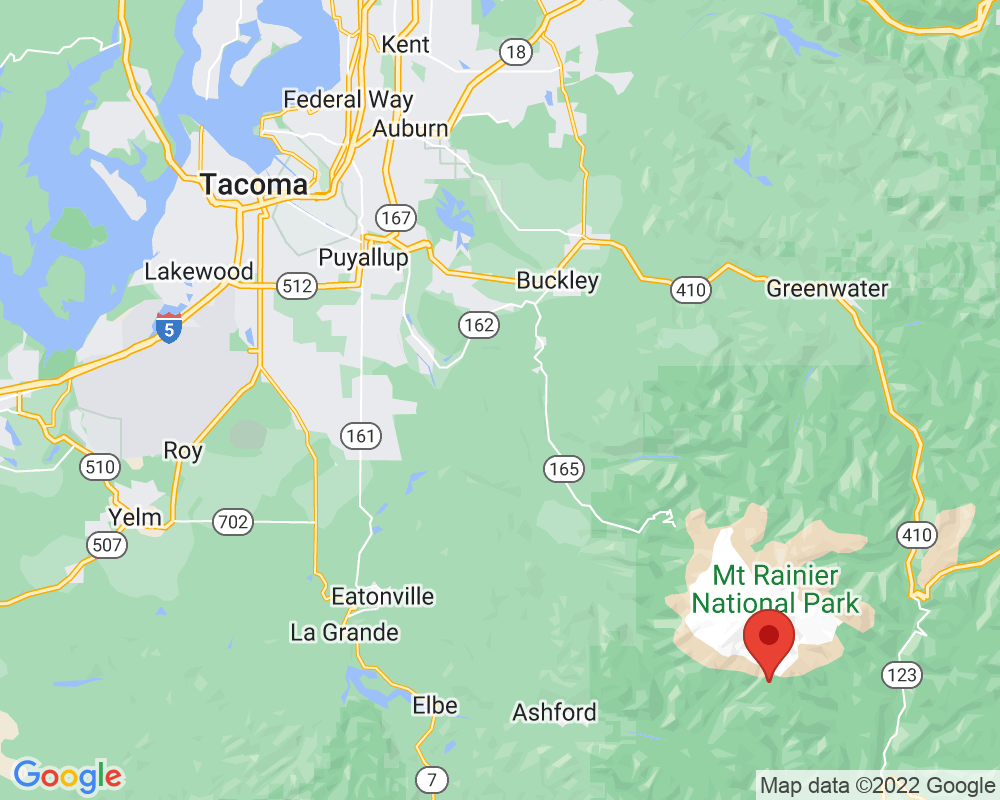

Paradise in May
Paradise is the most popular place to visit on Mt. Rainier. In May, it is completely covered in snow. People travel carefully with snowshoes or skis, and wear sunglasses and sunscreen to protect them from the very bright snow.
Visited: May 22, 2022 at 10:45 AM
Location: Paradise
